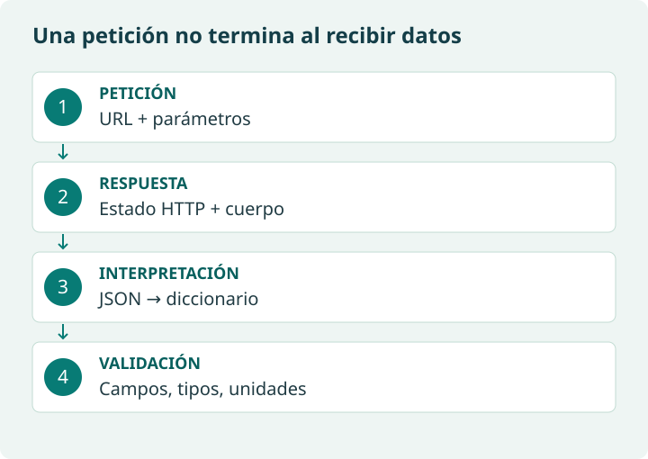

Elegir un método con criterio
Los métodos originales se desarrollan debajo. SQL, API y scraping describen formas de acceder o seleccionar datos; la minería de texto trabaja sobre el contenido ya obtenido. Pueden combinarse: descargar opiniones mediante una API y después contar sus palabras.
| Caso | Elección razonable | Qué comprobar |
|---|---|---|
| Clientes en una tabla del centro | SQL de lectura | Permisos, columnas necesarias y significado de cada fila. |
| Clientes en CSV proporcionado | Leer el fichero | Separador, codificación, cabecera y tipos. |
| Pronóstico documentado | API | Parámetros, zona horaria, unidades y posibles errores. |
| Productos en HTML permitido | Scraping | Selectores, campos ausentes y cambios de la página. |
| Temas frecuentes en opiniones | Procesamiento de texto | Idioma, tokenización, negación y alcance del análisis. |
Los servicios comerciales mencionados en el material pueden exigir cuenta, clave, tarifa o límites. Consulta su documentación antes de diseñar una actividad que dependa de ellos.
API: qué sucede entre pedir y recibir

Endpoint es la dirección de una operación; parámetros concretan lo que pides; respuesta contiene estado y datos. 200 indica éxito HTTP, 400 una solicitud no válida, 401/403 problemas de autenticación o permiso, 429 un límite de peticiones y 5xx un error del servidor. No todos se solucionan repitiendo.
import requests
respuesta = requests.get(
"https://api.open-meteo.com/v1/forecast",
params={"latitude": 43.3828, "longitude": -3.2204,
"hourly": "temperature_2m", "forecast_days": 1,
"timezone": "Europe/Madrid"},
timeout=20,
)
respuesta.raise_for_status()
datos = respuesta.json()
print(datos.keys())La espera máxima evita quedar esperando indefinidamente por inactividad de la conexión; no constituye un plazo total garantizado de toda la descarga. raise_for_status() detecta errores HTTP; json() interpreta el cuerpo, pero no garantiza por sí solo que la petición haya tenido éxito. Después hay que validar la estructura esperada.
Consulta: Requests: peticiones, JSON y tiempos de espera.
¿Una API siempre devuelve todos sus registros en una sola respuesta?
No. Puede paginar, limitar el número de resultados o requerir varias consultas. Lee la documentación y registra cuántos elementos recibes; no supongas que una respuesta equivale al conjunto completo.
Minería de texto: una primera representación
Antes de intentar clasificar sentimientos, cuenta términos en un corpus pequeño. Decide si distinguir mayúsculas, cómo separar palabras y si conservar tildes. «No es bueno» contiene «bueno», pero expresa una negación: una lista de palabras positivas no comprende el significado completo.
import re
from collections import Counter
textos = ["Buen precio y buen envío", "El envío llegó tarde"]
tokens = re.findall(r"[^\W\d_]+", " ".join(textos).casefold())
frecuencias = Counter(tokens)
print(frecuencias.most_common(3))«buen» y «envío» aparecen dos veces cada uno. Este recuento describe las palabras de estos textos; no demuestra satisfacción general ni identifica automáticamente sus temas. Las reglas pueden cambiar el resultado: documéntalas.
¿Cuál es la fuente y cuál el tratamiento en este ejemplo?
La fuente es la lista de comentarios ficticios. El tratamiento es convertir a minúsculas, tokenizar y contar. Minería de texto no indica cómo se descargaron esos comentarios.
Material de referencia original
Existen varios métodos para extraer datos según de dónde vengan:
Consultas a bases de datos (SQL)
Cuando los datos están en una base de datos relacional (por ejemplo, MySQL, PostgreSQL, SQL Server), se accede a ellos mediante un lenguaje llamado SQL (Structured Query Language).
Con SQL podemos:
- Seleccionar qué columnas queremos ver.
- Filtrar registros según condiciones (por ciudad, edad, fecha…).
- Ordenar los resultados.
- Agrupar y contar datos (por ejemplo, cuántos clientes hay por ciudad).
Ejemplo:
SELECT nombre, edad FROM clientes WHERE ciudad = 'Madrid';
Esta consulta hace lo siguiente:
- SELECT nombre, edad → muestra solo estas dos columnas.
- FROM clientes → indica la tabla.
- WHERE ciudad = 'Madrid' → filtra solo los clientes cuya ciudad es Madrid.
Es decir, extrae solo la información que necesitamos, no toda la base de datos.
¿Cuándo usar SQL?
- Cuando los datos ya están guardados en una base de datos.
- Cuando necesitamos trabajar con grandes cantidades de datos de forma eficiente.
APIs (Interfaces de Programación de Aplicaciones)
Una API es una puerta de acceso que nos permite pedir datos a una aplicación o servicio (por ejemplo, Twitter/X, Google Maps, OpenWeather…).
En lugar de descargar un archivo manualmente, usamos una URL o una llamada desde un programa para pedir datos y recibirlos en un formato estructurado, como JSON.
Ejemplo de uso de una API:
- Pedir a la API de Twitter los últimos 100 tuits con un hashtag concreto.
- Pedir a la API de OpenWeather el tiempo actual en una ciudad.
Ventajas de las APIs:
- Los datos suelen estar actualizados.
- Vienen ya en un formato estructurado (normalmente JSON).
- Permiten automatizar la recogida de datos (por ejemplo, todos los días a una hora).
Idea:
Una API es como un “camarero digital”: tú haces un pedido (request) y te trae los datos que has pedido (response).
Web scraping
El web scraping consiste en extraer información directamente de una página web, leyendo el código HTML que hay detrás.
Por ejemplo, en una tienda online, a simple vista ves el nombre del producto y el precio. Con scraping, un programa “lee” ese contenido y lo guarda en una tabla.
Ejemplo de uso:
- Extraer precios de productos de varias tiendas para compararlos.
- Obtener la lista de partidos y resultados de una página de deportes.
Herramientas habituales:
- En Python:
- BeautifulSoup: para leer y parsear el HTML.
- Selenium: para interactuar con páginas más complejas (con JavaScript, botones, etc.).
Importante:
Hay que respetar siempre las condiciones de uso de las webs (términos de servicio) y las leyes de protección de datos. No todo se puede scrapear libremente.
Minería de texto (Text Mining)
La minería de texto se centra en trabajar con grandes cantidades de texto libre:
- Comentarios de usuarios.
- Reseñas de productos.
- Correos electrónicos.
- Publicaciones en redes sociales.
Con técnicas de minería de texto podemos:
- Extraer palabras clave.
- Detectar sentimientos (positivo, negativo, neutro).
- Identificar temas habituales que aparecen en los textos.
Ejemplo:
Analizar opiniones de clientes sobre un producto en Amazon:
- ¿La mayoría son positivas o negativas?
- ¿Qué palabras se repiten (por ejemplo, “envío”, “calidad”, “precio”)?